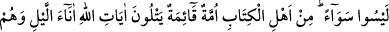

EHL-İ KİTABIN
HEPSİ BİR DEĞİLDİR
113. Hepsi bir değildir; ehl-i kitap içinde istikamet sahibi bir topluluk vardır ki,
gece saatlerinde secdeye kapanarak Allah’ın âyetlerini okurlar.
114. Onlar, Allah’a ve âhiret gününe inanırlar; iyiliği emreder, kötülükten
menederler; hayırlı işlere koşuşurlar. İşte bunlar iyi insanlardandır.
115. Onların yaptıkları hiçbir hayır karşılıksız bırakılmayacaktır. Allah, takvâ
sahiplerini çok iyi bilir.
116. İnkâr edenler var ya, onların malları da evlâtları da Allah’a karşı kendilerine
hiçbir fayda sağlamayacaktır. İşte onlar, cehennemliklerdir; onlar orada ebedî
kalacaklardır.
117. Onların, bu dünya hayatında yapmakta oldukları harcamaların durumu,
kendilerine zulmetmiş olan bir kavmin ekinlerini vurup da mahveden kavurucu bir
rüzgarın durumu gibidir. Onlara Allah zulmetmedi; fakat onlar kendilerine
zulmediyorlar.
118. Ey îman edenler! Kendi dışınızdakileri sırdaş edinmeyin. Çünkü onlar size
fenâlık etmekten asla geri durmazlar, hep sıkıntıya düşmenizi isterler. Gerçekten,
kin ve düşmanlıkları ağızlarından (dökülen sözlerinden) belli olmaktadır.
Kalplerinde sakladıkları (düşmanlıkları) ise daha büyüktür. Eğer düşünüp